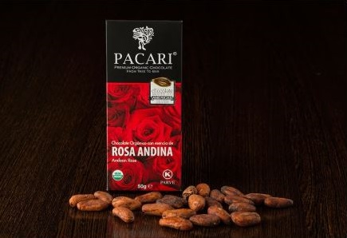

Ecuador domina el mundo del chocolate orgánico
El cacao ecuatoriano es conocido en todo el mundo, pues nuestra historia como exportadores tiene más de 100 años. Sin embargo, aún somos bastante nuevos en la comercialización y exportación del producto terminado. Sin embargo, desde hace algunos años, nuestro chocolate ha ganado reconocimiento mundial.
